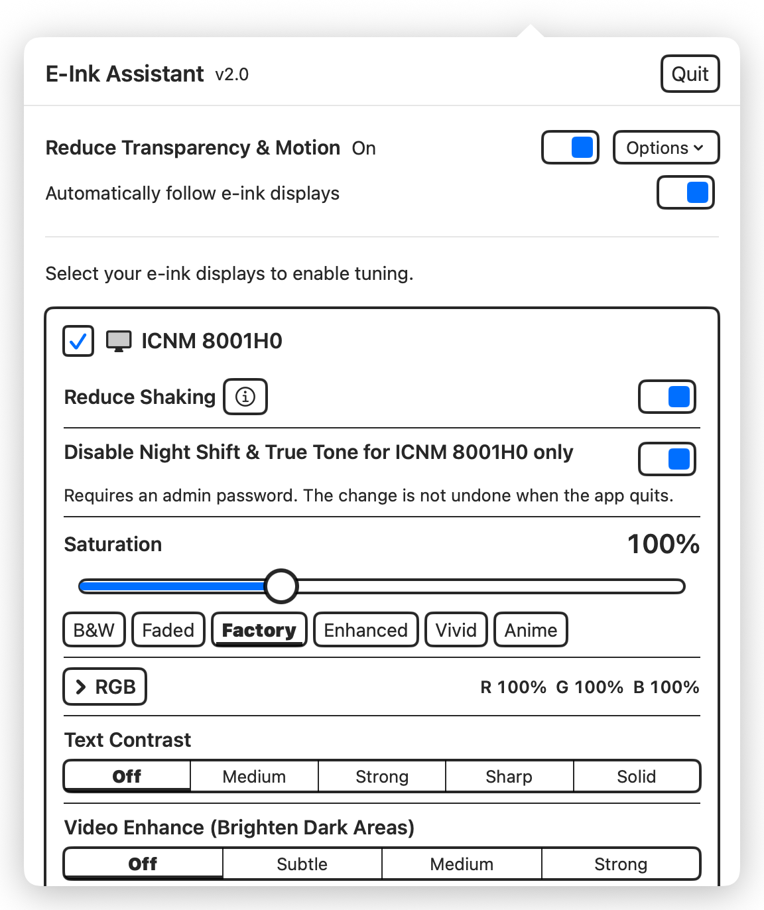
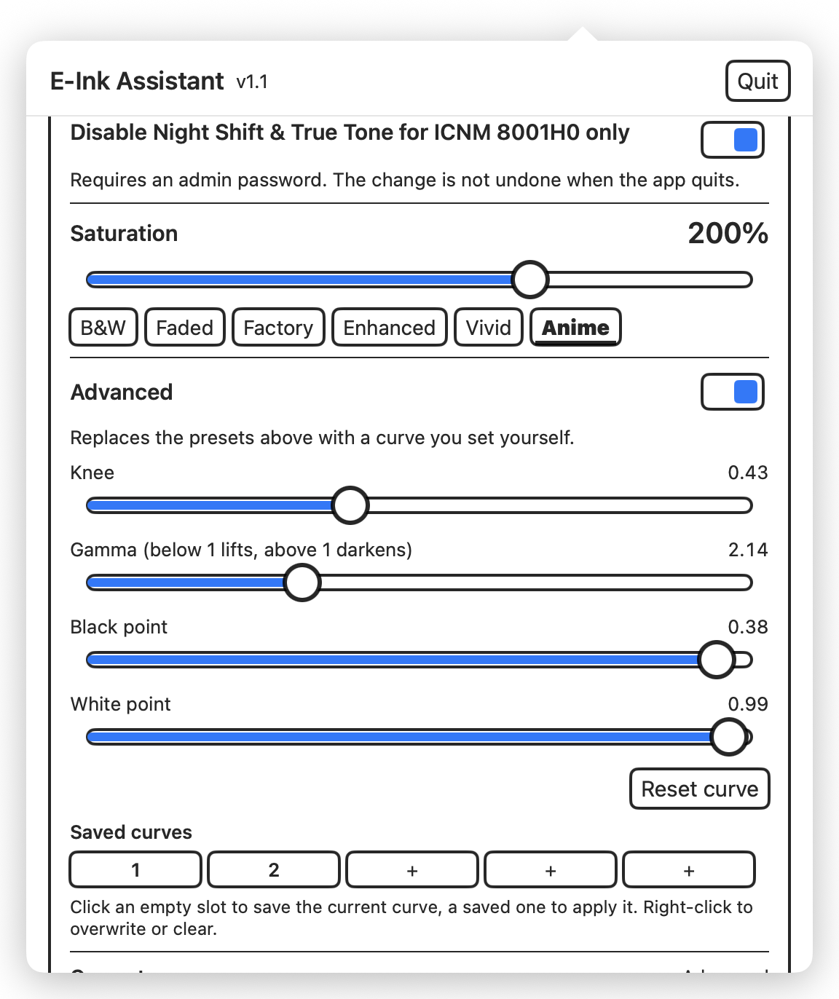

01
◒
Stop the shimmer.
Reduce Shaking turns off visible macOS dithering on supported panels, so each pixel can finally sit still.
B&W + COLORMade for macOS · Apple silicon
E‑Ink Assistant is a small menu-bar app that makes black-and-white and color e‑ink displays calmer, clearer, and more capable—without touching your laptop screen.
macOS 14+ · Apple Silicon · Free & open source

01 — WHAT IT FIXES
Slow refresh, limited contrast, macOS dithering, and a narrow color gamut are not flaws you can solve with a generic brightness slider.
E‑Ink Assistant gives each marked display its own purpose-built profile—leaving every other screen exactly as it was.
Reduce Shaking turns off visible macOS dithering on supported panels, so each pixel can finally sit still.
B&W + COLORText Contrast brings faint interface text forward with four carefully tuned levels, from gentle to solid black.
See the difference B&W + COLORRestore saturation, then correct individual red, green, and blue channels—one profile for each panel.
COLOR E‑INK02 — REAL IMPROVEMENTS
The app uses a targeted tone transform: darken what needs to be read, or lift only the shadows that hide media detail.

03 — SIMPLE BY DESIGN
Plug in your B&W or color e‑ink panel as usual.
Tell E‑Ink Assistant which display to tune—nothing else is affected.
Read with deeper text, watch with lifted shadows, or refine a saved profile.

04 — WHEN YOU WANT MORE
Fine-tune knee, gamma, black point, and white point with a live curve. Save five named presets for different displays, rooms, or moods.
Profiles are per display. Adjustments restore on quit and reapply on launch.
READY WHEN YOUR DISPLAY IS
Free, privacy-respecting, and built for the screen you actually want to look at all day.
Download E‑Ink AssistantmacOS 14+ · Apple Silicon · MIT License